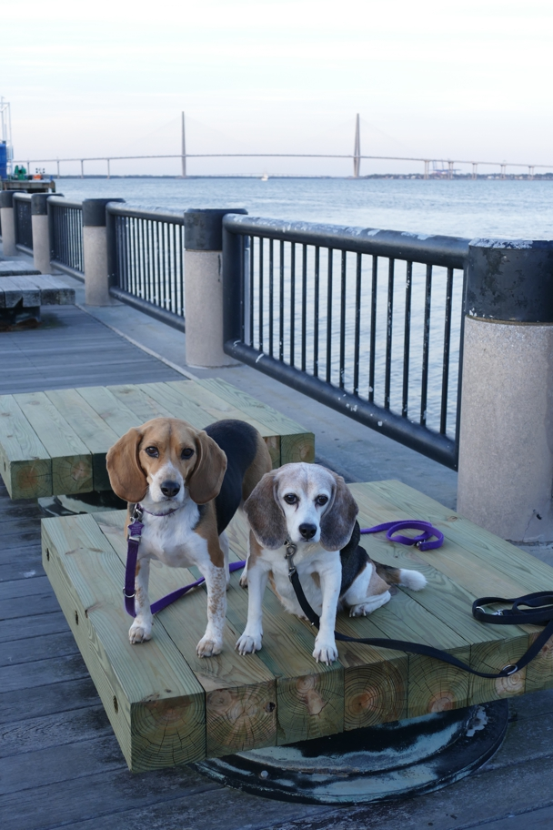

Charleston, SC's historic downtown is a lovely district of 18th-century buildings lined with palm trees which looks like nowhere else, especially in evening light. We didn't find a good spot to capture it with the beagles, but here they are by the harbor.
Charleston Halley Beagle South Carolina Wallace Beagle